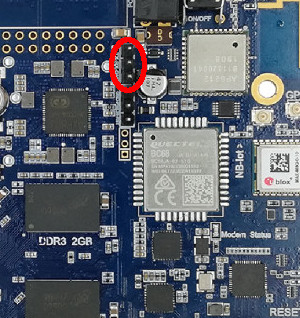

The WiiPiiDo comes by default deployed with an Armbian image, that was customized to fully support all of the WiiPiiDo components.
Through Armbian, the WiiPiiDo can be used either as a desktop-alike computer, or as a server. This way, it it possible to use the WiiPiiDo in the following ways:
Info
Independently of the method used to use the board, the login credentials are:
- username: pi
- password: wiipiido
Connect through the Serial Interface
To connect to the console using the serial interface, you need to have a USB to Serial connector, by connecting it from the host PC's USB port to the WiiPiiDo's Serial connection highlighted in the following image:

The WiiPiiDo baud rate is set to 115200, so, once connected to Linux machine, you can use for example the picocom program to open the serial console:
$ picocom -b 115200 <serial_port>
Note
The <serial_port> is the port being used by the USB to Serial connector.
You can check this by, after connecting the connector to the PC, using the command dmseg
and see in which port the device was connected.
In this example, we can see that a port was connected to the ttyUSB0 port.
As such, in this case, the picocom command would be picocom -b 115200 /dev/ttyUSB0.
In Windows, Putty can be used for this effect as well.
In this case, make sure that you are using Serial as the Connection type. Once the Serial line and Speed are with the correct values, you can start the serial connection by clicking in the Open button.
Connect through SSH
To connect to the WiiPiiDo through SSH you first need to know its IP address. This can be found by either using a network scanner program, like Fing, or by configuring the WiiPiiDo to have a static and known IP, when connected to it using the serial connection or using the HDMI output.
When the IP address is known, you can login to the WiiPiiDo, in a Linux machine by using the following command
$ ssh pi@<wiipiido_ip_address>.
Alternately, in Windows, you can, for example, use once again use Putty.
This time, make sure that you are using SSH as the Connection type, and that the port is 22.
Activate/Deactivate the Desktop Environment
To activate and deactivate the desktop environment that comes by default, you can simply enable/disable the display manager that is being used, which in this case is LightDM.
To do this, you can run the following commands in the console.
# Enable the desktop environment
$ systemctl enable lightdm.service
$ systemctl start lightdm.service
# Disable the desktop environment
$ systemctl stop lightdm.service
$ systemctl disable lightdm.service
After rebooting the board, the desktop environment will be active/inactive.